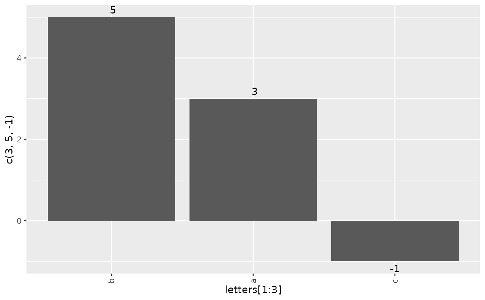
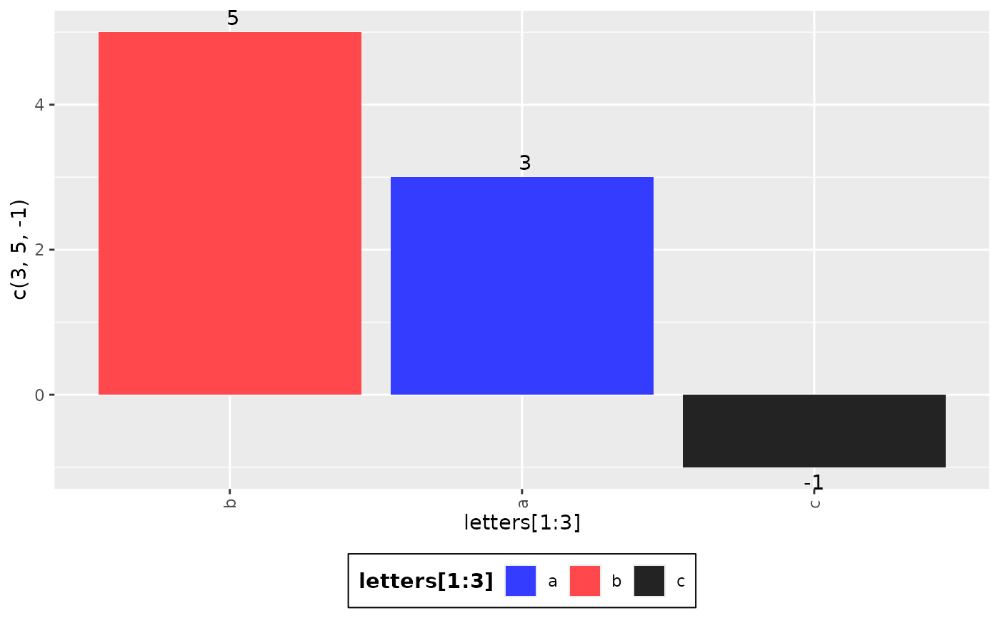
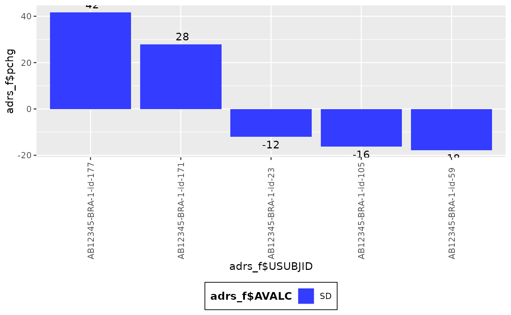
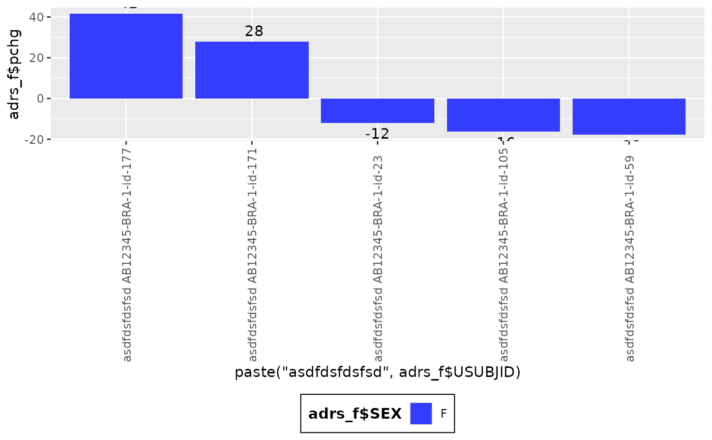
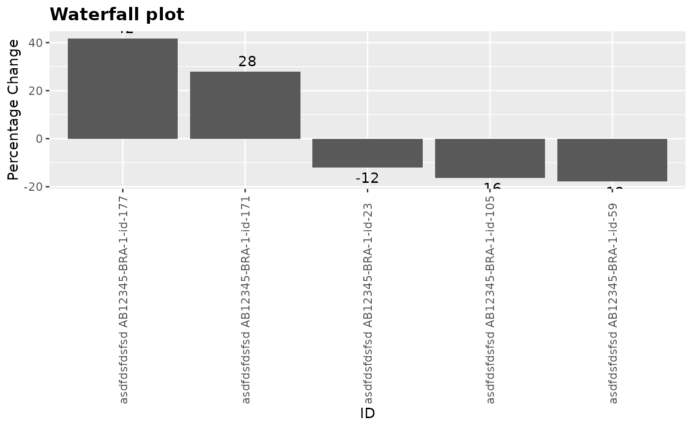

![[Stable]](figures/lifecycle-stable.svg)
This basic waterfall plot visualizes a quantity height ordered by value with some markup.
Usage
g_waterfall(
height,
id,
col_var = NULL,
col = getOption("ggplot2.discrete.colour"),
xlab = NULL,
ylab = NULL,
col_legend_title = NULL,
title = NULL
)Arguments
- height
(
numeric)
vector containing values to be plotted as the waterfall bars.- id
(
character)
vector containing identifiers to use as the x-axis label for the waterfall bars.- col_var
(
factor,character, orNULL)
categorical variable for bar coloring.NULLby default.- col
(
character)
color(s).- xlab
(
string)
x label. Default is"ID".- ylab
(
string)
y label. Default is"Value".- col_legend_title
(
string)
text to be displayed as legend title.- title
(
string)
text to be displayed as plot title.
Examples
library(dplyr)
g_waterfall(height = c(3, 5, -1), id = letters[1:3])

g_waterfall(
height = c(3, 5, -1),
id = letters[1:3],
col_var = letters[1:3]
)

adsl_f <- tern_ex_adsl %>%
select(USUBJID, STUDYID, ARM, ARMCD, SEX)
adrs_f <- tern_ex_adrs %>%
filter(PARAMCD == "OVRINV") %>%
mutate(pchg = rnorm(n(), 10, 50))
adrs_f <- head(adrs_f, 30)
adrs_f <- adrs_f[!duplicated(adrs_f$USUBJID), ]
head(adrs_f)
#> # A tibble: 5 × 30
#> STUDYID COUNTRY SITEID SUBJID AGE SEX ARMCD ARM ACTARMCD ACTARM RACE
#> <chr> <fct> <chr> <chr> <dbl> <fct> <fct> <fct> <fct> <fct> <fct>
#> 1 AB12345 BRA BRA-1 id-105 37.8 F ARM A A: Drug… ARM A A: Dr… ASIAN
#> 2 AB12345 BRA BRA-1 id-171 29.8 F ARM B B: Plac… ARM B B: Pl… ASIAN
#> 3 AB12345 BRA BRA-1 id-177 38.9 F ARM B B: Plac… ARM B B: Pl… ASIAN
#> 4 AB12345 BRA BRA-1 id-23 41.3 F ARM A A: Drug… ARM A A: Dr… AMER…
#> 5 AB12345 BRA BRA-1 id-59 26.7 F ARM A A: Drug… ARM A A: Dr… ASIAN
#> # ℹ 19 more variables: TRTSDTM <dttm>, TRTEDTM <dttm>, EOSDY <dbl>,
#> # STRATA1 <fct>, STRATA2 <fct>, BMRKR1 <dbl>, BMRKR2 <fct>, REGION1 <fct>,
#> # SAFFL <fct>, USUBJID <chr>, AVISIT <fct>, PARAMCD <fct>, PARAM <fct>,
#> # AVALC <fct>, AVAL <int>, ADTM <date>, AVISITN <dbl>, DTHFL <fct>,
#> # pchg <dbl>
g_waterfall(
height = adrs_f$pchg,
id = adrs_f$USUBJID,
col_var = adrs_f$AVALC
)

g_waterfall(
height = adrs_f$pchg,
id = paste("asdfdsfdsfsd", adrs_f$USUBJID),
col_var = adrs_f$SEX
)

g_waterfall(
height = adrs_f$pchg,
id = paste("asdfdsfdsfsd", adrs_f$USUBJID),
xlab = "ID",
ylab = "Percentage Change",
title = "Waterfall plot"
)
